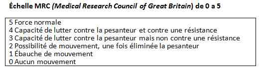
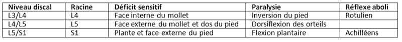

Bienvenue Sur Medical Education
Sciatiques et cruralgies
Spécialité : rhumatologie /
Points importants
-
Lomboradiculalgie = douleur lombaire avec irradiation radiculaire douloureuse, distale dans le membre inférieur
-
Lomboradiculalgie aiguë = délai d'évolution < 3 mois
-
Lombosciatique = douleur dont la topographie radiculaire est L5 ou S1
-
Lombocruralgie = douleur dont la topographie est L4 ou L3
-
L'examen clinique vise à distinguer :
-
lomboradiculalgies communes par hernie discale ou lésion arthrosique ou pour laquelle aucune affection spécifique n'a été diagnostiquée
-
lomboradiculalgies symptomatiques secondaires à une affection :
-
inflammatoire
-
infectieuse
-
tumorale
Présentation clinique / CIMU
SIGNES FONCTIONNELS
- lomboradiculalgies communes par hernie discale ou lésion arthrosique ou pour laquelle aucune affection spécifique n'a été diagnostiquée
-
lomboradiculalgies symptomatiques secondaires à une affection :
- inflammatoire
- infectieuse
- tumorale
Présentation clinique / CIMU
SIGNES FONCTIONNELS
Signes généraux
- Recherche une altération de l'état général
- Présence d'une fièvre
Signes spécifiques
-
Trajet de la douleur :
- S1 : Face postérieure de la cuisse, postéro-externe du mollet, face plantaire et bord externe du pied
- L5 : Bord externe de la cuisse, antéro-externe du mollet, face dorsale du pied et bord interne du pied
- L3 et L4 : Face antérieure de la cuisse et du mollet
-
Rythme de la douleur :
-
mécanique :
- soulagée par le repos et les antalgiques
- aggravée par l'exercice physique
- non insomniante
- pas de raideur matinale
-
inflammatoire :
- douleur insomniante
- non soulagée par le repos
- raideur matinale
- en faveur d'une hernie discale
-
mécanique :
- Douleur exacerbée par la toux ou à l'effort
- Soulagée par le décubitus dorsal
CONTEXTE
Terrain
- Lomboradiculalgies communes : Sujet jeune
-
Lombocruralgies symptomatiques :
- âge > 55 ans
- toxicomanie
Traitements usuels
- Immunosuppresseurs
- Corticothérapie au long court
- Anticoagulants
Antécédents
- Lombosciatiques récidivantes
- Pathologie tumorale ou myélomateuse
- Ostéoporose
Circonstances de survenue
- Traumatisme
- Port de charge lourde
- Début progressif
EXAMEN CLINIQUE
Lombosciatique
- Attitude antalgique
-
Signe de Lasègue : douleur déclenchée en soulevant le membre inférieur en extension
- Lasègue croisé
-
Examen neurologique du membre inférieur :
-
testing musculaire segment par segment : quadriceps, jambiers antérieurs
-  _174 Tableau Echelle MRC
- recherche d'un syndrome de la queue de cheval (hypoesthésie en selle, diminution du tonus sphinctériens, rétention aigue d'urine)
- marche sur les talons
- marche sur la pointe des pieds
-
hypoesthésie sur le trajet de L5 (face dorsale du pied), S1 (face plantaire) : déficit peu grave
-  _175 Tableau Signes physique de compression d'une racine lombaire
- abolition des réflexes achilléens (peu grave)
-
testing musculaire segment par segment : quadriceps, jambiers antérieurs
Lombocruralgie
-
Signe de Léri (ou signe de Lasègue inversé) :
- le patient est en décubitus ventral, genou fléchi
- la douleur est reproduite à la face antérieure de la cuisse
-
Examen neurologique :
- abolition du réflexe rotulien
- hypoesthésie superficielle de la face antérieure de la cuisse et plus ou moins la crête tibiale
- déficit du quadriceps
- Touchers pelviens pour éliminer une pathologie tumorale
EXAMENS PARACLINIQUES SIMPLES
- BU (recherche d'une infection urinaire haute : diagnostic différentiel)
- ECG (signes d'hypercalcémie)
CIMU
- Tri 5 pour une lomboradiculalgie commune
- Tri 4 pour une lomboradiculalgie symptomatique
Signes paracliniques
BIOLOGIE
-
Aucune biologie dans la lombosciatique commune
Dans la lombosciatique symptomatique
- NFS (hyperleucocytose, anémie)
- CRP, VS
- TP, INR (recherche d'un surdosage en AVK)
- Calcémie - phosphorémie (hypercalcémie, hyperphosphorémie)
IMAGERIE
Lombosciatique commune
- Pas d'imagerie, sauf si un traitement chirurgical est envisagé (délai de 4 à 8 semaines)
-
Indications de l'imagerie :
-
sciatique hyperalgique : Radio standard
- peut être normale
- pincement de l'interligne articulaire
- lésions dégénératives : Ostéophytes
- elle peut dépister des lésions malignes du corps vertébral
-
sciatique hyperalgique : Radio standard
Sciatique paralysante
- IRM en urgence
Sciatique et syndrome de la queue de cheval
- IRM en urgence
Sciatique symptomatique
- IRM
-
L'objectif de l'IRM est la mise en évidence :
- d'une hernie discale
- d'un conflit disco-radiculaire
- d'une hernie discale exclue
Cruralgies
- TDM rachidien élargi sur les parties périrachidiennes car les causes extra rachidiennes sont fréquentes
Diagnostic étiologique
Sciatique commune
- Conflit disco-radiculaire
- Hernie discale
Sciatique symptomatique
- Compression de la racine par une tumeur, métastase
- Spondylodiscite (tuberculose, pyogène)
Diagnostic différentiel
Sciatique
- Anévrysme aorte abdominale
- Abcès du psoas
- Hématome du psoas sous AVK
- Tumeur aile iliaque
Cruralgie
- Hématome
- Abcès du psoas
- Anévrysme de l'aorte abdominale
- Envahissement tumoral d'origine digestive, gynécologique ou rénale
Traitement
Pas de repos strict au lit
Antalgiques paliers II et III
- Association paracétamol/tramadol (Ixprim® : 1cpx4/j)
- Tramadol forme LP (Topalgic® Lp 100 ou 150x2/j)
-
Morphine : Sevredol® 5 ou 10 mg per os, si patient soulagé, un traitement ambulatoire est possible par :
- Skenan® 30 mgx2/j avec plus ou moins Sévredol® en interdose
Anti-inflammatoires non stéroïdiens en cure courte en dehors de toute contre-indication (Bi profénid® LP 100 mg/ jour pendant 7 jours)
Myorelaxants
Orthèse lombaire souple
Kinésithérapie après amélioration de la douleur (pas en phase aiguë)
Indication chirurgicale
- Déficit neurologique
- Si pas de réponse au traitement antalgique et après un délai d'évolution de 4 à 8 semaines
Devenir / orientation
CRITERES DE SORTIE DES URGENCES
-
Si patient soulagé, traitement ambulatoire
CRITERES D'ADMISSION
-
Lombosciatique hyperalgique : résistance au traitement morphinique
-
Suspicion de lombosciatique symptomatique
-
Déficit neurologique
ORDONNANCE DE SORTIE
-
Voir « Traitement »
Bibliographie
-
Prise en charge diagnostique et thérapeutique des lombalgies et lombosciatiques communes de moins de trois mois (HAS février 2000)
-
Imagerie dans la lombalgie commune de l'adulte (HAS Décembre 1998)
-
Médecine Interne : Principes et Pratiques (DAVIDSON)
Bibliographie
- Prise en charge diagnostique et thérapeutique des lombalgies et lombosciatiques communes de moins de trois mois (HAS février 2000)
- Imagerie dans la lombalgie commune de l'adulte (HAS Décembre 1998)
- Médecine Interne : Principes et Pratiques (DAVIDSON)
Auteur(s) : Nora OULED, Sarah ENSER